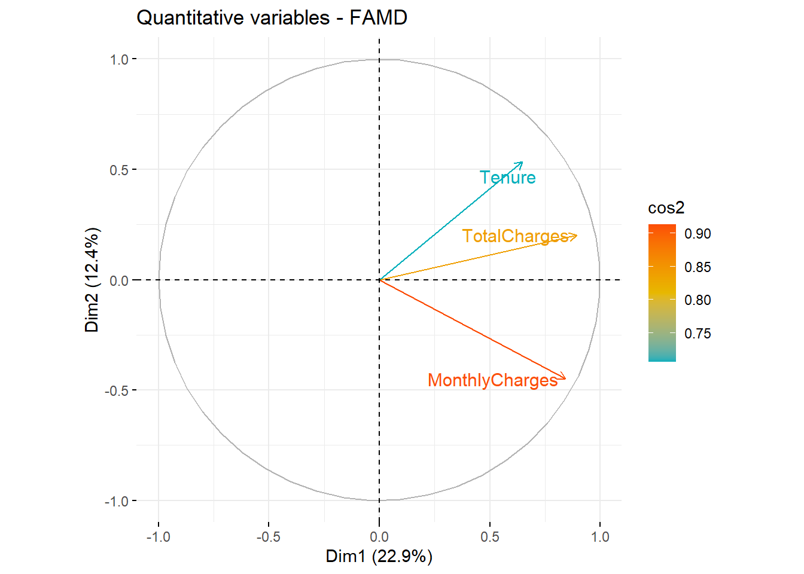

Gender: El gènere del client: Home (1), Femení (0).
SeniorCitizen: Indica si el client té 65 anys o més: No (0), Sí (1).
Partner: El contracte de servei és revenut pel soci: No (0), Sí (1).
Dependents: Indica si el client viu amb algun dependent: No (0), Sí (1).
Tenure: Indica l’import total de mesos que el client ha estat amb l’empresa.
PhoneService: Indica si el client es subscriu al servei de telèfon de casa amb l’empresa: No (0), Sí (1).
MultipleLines: Indica si el client es subscriu a diverses línies telefòniques amb l’empresa: No (0), Sí (1).
InternetService: Indica si el client es subscriu al servei d’Internet amb l’empresa: No (0), DSL (1), Fibra òptica (2).
OnlineSecurity: Indica si el client es subscriu a un servei addicional de seguretat en línia prestat per l’empresa: No (0), Sí (1), NA (2).
OnlineBackup: Indica si el client es subscriu a un servei de backup online addicional proporcionat per l’empresa: No (0), Sí (1), NA (2).
DeviceProtection: Indica si el client es subscriu a un pla addicional de protecció de dispositius per als seus equips d’Internet proporcionats per l’empresa: No (0), Sí (1), NA (2).
TechSupport: Indica si el client es subscriu a un pla de suport tècnic addicional de l’empresa amb temps d’espera reduïts: No (0), Sí (1), NA (2).
StreamingTV: Indica si el client utilitza el seu servei d’Internet per transmetre la programació de televisió d’un proveïdor de tercers: No (0), Sí (1), NA (2). L’empresa no cobra cap càrrec addicional per aquest servei.
StreamingMovies: Indica si el client utilitza el seu servei d’Internet per transmetre pel·lícules d’un proveïdor de tercers: No (0), Sí (1), NA (2). L’empresa no cobra cap càrrec addicional per aquest servei.
Contract: Indica el tipus de contracte actual del client: Mes a mes (0), Un any (1), Dos anys (2).
PaperlessBilling: Indica si el client ha triat facturació sense paper: No (0), Sí (1).
Mètode de pagament: Indica com el client paga la seva factura: transferència bancària - automàtica (0), targeta de crèdit - automàtica (1), xec electrònic (2), xec per correu (3).
MonthlyCharges: Indica el total de la quota mensual actual del client per a tots els seus serveis de l’empresa.
TotalCharges: Indica el total de càrrecs del client.
Churn: Indica si el client es talla o no: No (0), Sí (1).
Gender SeniorCitizen Partner Dependents Tenure PhoneService
1 Female No SeniorCitizen Partner No Dependents 1 No PhoneService
2 Male No SeniorCitizen No Partner No Dependents 34 PhoneService
3 Male No SeniorCitizen No Partner No Dependents 2 PhoneService
4 Male No SeniorCitizen No Partner No Dependents 45 No PhoneService
5 Female No SeniorCitizen No Partner No Dependents 2 PhoneService
6 Female No SeniorCitizen No Partner No Dependents 8 PhoneService
MultipleLines InternetService OnlineSecurity OnlineBackup
1 No MultipleLines DSL No OnlineSecurity OnlineBackup
2 No MultipleLines DSL OnlineSecurity No OnlineBackup
3 No MultipleLines DSL OnlineSecurity OnlineBackup
4 No MultipleLines DSL OnlineSecurity No OnlineBackup
5 No MultipleLines Fiber optic No OnlineSecurity No OnlineBackup
6 MultipleLines Fiber optic No OnlineSecurity No OnlineBackup
DeviceProtection TechSupport StreamingTV StreamingMovies
1 No DeviceProtection No TechSupport No StreamingTV No StreamingMovies
2 DeviceProtection No TechSupport No StreamingTV No StreamingMovies
3 No DeviceProtection No TechSupport No StreamingTV No StreamingMovies
4 DeviceProtection TechSupport No StreamingTV No StreamingMovies
5 No DeviceProtection No TechSupport No StreamingTV No StreamingMovies
6 DeviceProtection No TechSupport StreamingTV StreamingMovies
Contract PaperlessBilling PaymentMethod MonthlyCharges
1 Month-to-month PaperlessBilling Electronic check 29.85
2 One year No PaperlessBilling Mailed check 56.95
3 Month-to-month PaperlessBilling Mailed check 53.85
4 One year No PaperlessBilling Bank transfer (automatic) 42.30
5 Month-to-month PaperlessBilling Electronic check 70.70
6 Month-to-month PaperlessBilling Electronic check 99.65
TotalCharges Churn
1 29.85 No Churn
2 1889.50 No Churn
3 108.15 Churn
4 1840.75 No Churn
5 151.65 Churn
6 820.50 Churn
## FAMDres.famd <-FAMD(df, sup.var =20, ## Set the target variable "Churn" as a supplementary variablegraph =FALSE, ncp=25)## Inspect principal componentsget_eigenvalue(res.famd)
Del mismo modo, puede resaltar variables cuantitativas utilizando sus valores cos2 que representan la calidad de la representación en el mapa factorial. Si una variable está bien representada por dos dimensiones, la suma del cos2 se cierra a uno. Para algunos de los elementos, es posible que se requieran más de 2 dimensiones para representar perfectamente los datos.
# Color by cos2 values: quality on the factor mapfviz_famd_var(res.famd, "quanti.var", col.var ="cos2",gradient.cols =c("#00AFBB", "#E7B800", "#FC4E07"), repel =TRUE)

Al igual que las variables cuantitativas, los resultados de las variables cualitativas se pueden extraer de la siguiente manera:
Si se desean hacer gráficos individuales se realiza lo siguiente.
ind <-get_famd_ind(res.famd)ind
FAMD results for individuals
===================================================
Name Description
1 "$coord" "Coordinates"
2 "$cos2" "Cos2, quality of representation"
3 "$contrib" "Contributions"
Para trazar individuos, use la función fviz_mfa_ind() [in factoextra]. De forma predeterminada, los individuos están coloreados en azul. Sin embargo, al igual que las variables, también es posible colorear a los individuos por sus valores de cos2 y contribución:
Es posible colorear a los individuos utilizando cualquiera de las variables cualitativas en la tabla de datos inicial. Para ello, se utiliza el argumento habillage en la función fviz_famd_ind().
fviz_mfa_ind(res.famd, habillage ="Churn", # color by groups palette =c("#00AFBB", "#E7B800", "#FC4E07"),addEllipses =TRUE, ellipse.type ="confidence", repel =TRUE# Avoid text overlapping )